Shu Ishida · Aliasghar Khani · Tianyu Zhang · The Cong Luong · James Seale Smith · Adam Gaier
Autoregressive LLMs commit to every token forever — unlike humans, who draft, then revise.
Decouple where a token is generated from where it is displayed. Keep the benefits of autoregression (KV-caching), but non-autoregressive in display order.
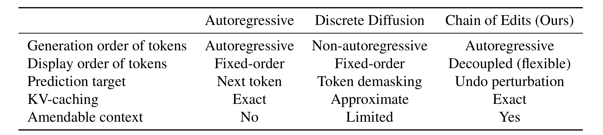
AutoIndexer keeps exact KV-caching while letting display order be rewritten after the fact.
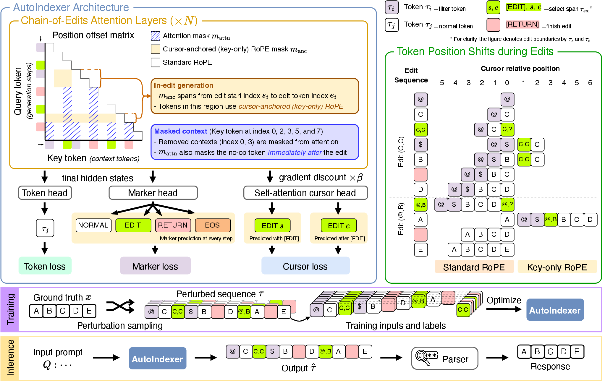
A marker head decides whether the next token is ordinary vocabulary or one of these four classes — never competing inside the >150k-way softmax.
When [EDIT] fires, a pointer network (cursor head) predicts a start \(S\) and end \(E\), like a text editor's selection.
Edit indices \(s \le e\):
[EDIT] moves the cursor to position \(s\) in the display sequence. The new token always gets relative position 1.
Replacement / inserted tokens are generated at the cursor, one at a time, fully autoregressively.
[RETURN] sends the cursor back to the end and re-assigns positions. \(e - s\) tokens are removed.
Removed tokens are masked, not deleted from the KV cache — so hidden edit spans can double as scratch registers, like Chain-of-Thought that never reaches the output.
Both decoders start from "The robot moved item." The vanilla decoder can only append — it can't insert "small warehouse" earlier without restarting. AutoIndexer appends [EDIT]/[RETURN] markers to the same KV cache; the parser slots each token into its display position live, updating the sentence in place.
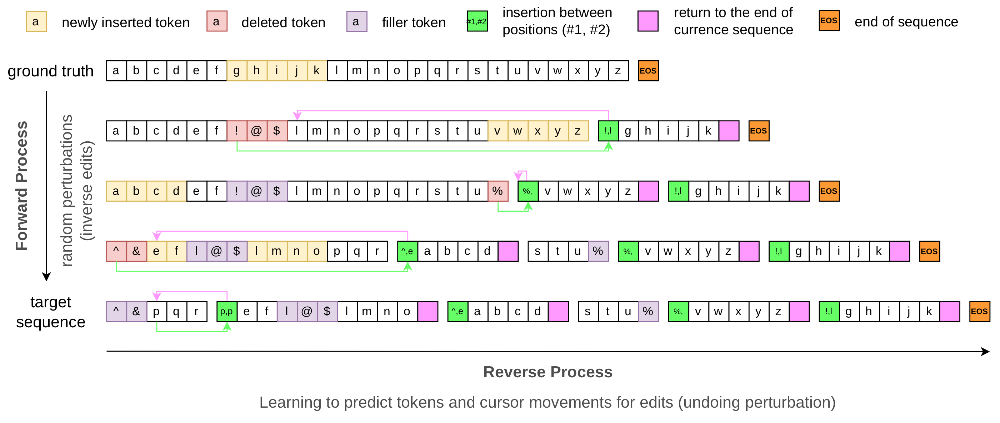
A clean sequence \(\vec{x}\) is perturbed by sampling \(n\) random edit operators and applying their inverses in reverse order:
The model learns to undo the perturbation — same forward/reverse structure as diffusion, but "noise" is a discrete edit program. No human edit history required, though real diffs (e.g. git) enable task-specific fine-tuning.
Standard RoPE factorizes a static relative-position matrix into query/key rotations. AutoIndexer generalizes this to a chain of edits: attention splits into segments wherever positions shift.
Reduces exactly to standard RoPE when no edit is underway.
Keys/values are cached once, unrotated; the rotary angle is applied at attention time — so KV-cache reuse survives non-monotonic display order.
A naive implementation materializes two full score matrices per segment before masking — \(2\times\) the FLOPs of ordinary attention.
Instead, we route each key to exactly one of two paths, packed contiguously:
varlen callvarlen callOutputs recombine via log-sum-exp reweighting, reproducing the exact joint softmax — total FLOPs approximate \(1\times\), not \(2\times\).
A fused CuTe-DSL kernel folds routing/packing into the RoPE rotation itself — the autoindexer_cutedsl implementation, plus a portable autoindexer_eager fallback and Triton backend.
At each step, the marker head samples a class; vocabulary sampling only happens for [NORMAL]. Decoding enforces alternating [EDIT]/[RETURN].
When [EDIT] fires at position \(t\): the cursor head samples \(s\) immediately, then \(e\) at the next step.
A sequence parser tracks display positions live, then applies the edits forward to recover the answer:
Parsing a synthetic training trajectory recovers the clean sequence exactly.
Fully detaching the cursor head from the backbone gave better representations. AutoIndexer reuses a standard backbone, so it can be LoRA fine-tuned from any pretrained checkpoint — here, Qwen3 8B.
LoRA-finetune Qwen3 8B Base/Instruct → AutoIndexer 8B LoRA. Evaluate on general / math&science / code tasks vs. autoregressive (Qwen3) and diffusion (LLaDA, Dream) baselines.
Corrupt a held-out validation window (insertion / deletion / substitution / no-op). Measure localization & repair quality both teacher-forced and in free generation (64-token budget).
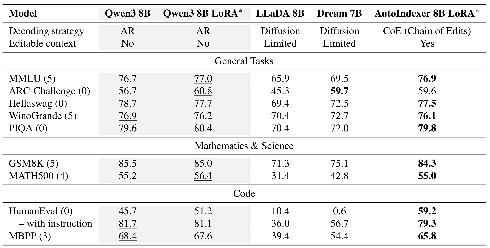
AutoIndexer essentially ties the matched Qwen3-LoRA baseline (within ~2 points everywhere except HumanEval, where it leads 59.2 vs 51.2) — the marker/cursor heads cost almost nothing — and beats the diffusion baselines by a wide margin (only ARC-Challenge is a near-tie, 59.6 vs Dream’s 59.7).
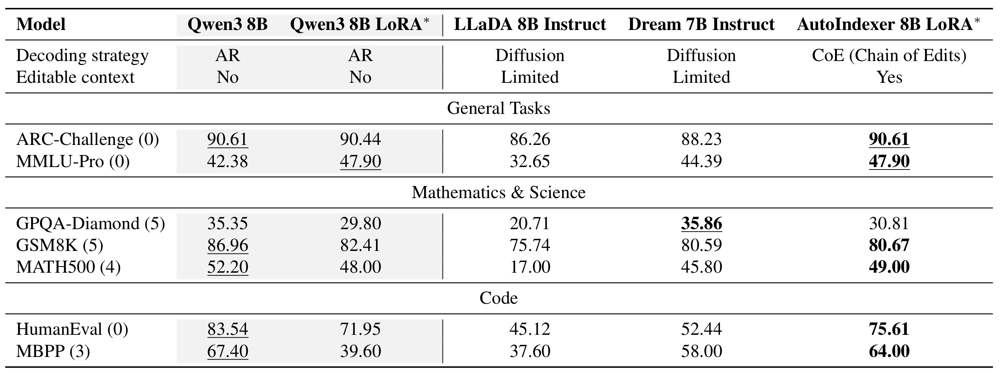
Instruction-tuned AutoIndexer matches or beats the matched Qwen3-LoRA baseline on most tasks (ties MMLU-Pro, leads MBPP 64.0 vs 39.6; slightly behind on GSM8K) and outperforms the diffusion instruct baselines on all but GPQA-Diamond, where Dream 7B leads. The gap to the original Qwen3 8B on math/code likely reflects its RLVR training, which we do not replicate.
We corrupted held-out CPT validation windows in four ways:
Teacher-forced: oracle-placed markers; does [EDIT] probability rise at the corruption, and does the cursor localize it?
Free generation: the model decides everything, 64-token budget — the real test of self-correction.
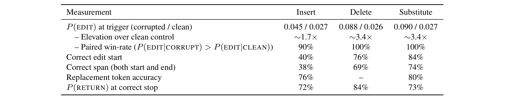
Deletion and substitution leave an explicit noise cue and localize well (69–74% span accuracy). Insertion is weakest — missing text has no token to notice.
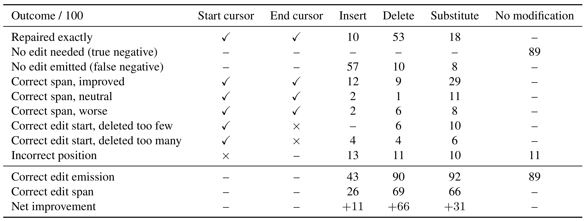
"Net improvement" = rollouts whose Levenshtein distance to ground truth decreased after editing. Insertion remains hardest — missing text is easy to miss.
<h4 … contact-t <<<…>>> question or are you a hairstylist …</h4>…col-md-12[EDIT 61,61]itles">Do you have a[RETURN] …<h4 … contact-titles">Do you have a question or …</h4> (verbatim match)…"mask image <<<[?] soaking principalmente>>> path", "");…::Switch [EDIT 129,134] [RETURN] >("s", "no-sleep", ……"mask image path", "");import org.netbeans < <<<enco(keys brutal>>> .client.LSPBindings; ……modules.editor.*; [EDIT 185,188] .modules.lsp [RETURN] …import org.netbeans.modules.lsp.client.LSPBindings; …{ 1, 2 } >= { 1, 2 } true Every set is a superset of itself.… (no marker emitted) …(unmodified — correctly left alone)Corrupted spans shown as <<<…>>>. On uncorrupted drafts the model abstains correctly 89% of the time.
…French Emb <<<educated[?] Identified[?] yup>>> assies ……[EDIT 38,44]assies and Cons[RETURN] ……French Embassies and Consassies around the world …Exact span found, but writes an unwanted continuation instead of a clean delete.
// Analysis is the method that kicks <<<bilità astronauts[?]>>> the analysis plugins…[EDIT 15,18] off the[RETURN] …// Analysis is the method that kicks off the the analysis pluginsCorrect span, but a shorter malformed replacement leaves a doubled word.
if(!transpose){start=-1;step=1;}else <<<…>>> step=-1;}……[EDIT 38,38] {[RETURN] …if(!transpose){start=-1;step=1;}else{step=-1;}…Correctly localizes the empty span, but writes a shorter insertion than the gold 6 tokens.
auto &scores_dim = <<<mutated Edit_Max.related):?> fullName>>> scores->dims();…float *r[EDIT 218,223][RETURN]pn_rois_data…auto &scores_dim = mutated scores->dims();Cursor lands one token late; the first corrupted word survives.
gray: '#949 <<<…>>> ', lightGray: "#e8e8e9",…createTheme [EDIT 219,219] [RETURN] (colors, fonts) [EOS]gray: '#949', lightGray: "#e8e8e9",Edit fires 152 tokens late, right at the end of the draft, and inserts nothing.
selector().get(BoxSelection <<<.middle[?]hots Leonard[?]…>>> .set(type.size);…getBlockTile(11, [EDIT 43,49] ().[RETURN] …selector().get(BoxSelection.middle(). genome,default azureTextWriter pred.set(type.size);Span lands one token late and too short, leaving half the garbage in place.
…one of the biggest things in determining a team's grit and power.… (uncorrupted)…team's [EDIT 46,46] ranking. I think this is [RETURN] ……team's ranking. I think this is grit and power.…Model fires anyway on clean text, cutting into its own correct continuation.
SCRIPT_DIR="$(cd «… JavaScript … ves_hdl defaulted» SCRIPT_DIR"$(dirname "$0")" && pwd)" readonlyA held-out StarCoder-Shell window, corrupted with a substitute op (10 tokens deleted, 10 random tokens inserted). The edit fires 170 tokens after the corruption. Forwarded once with attn_implementation="autoindexer_eager" to read out real attention weights and cursor pointer distributions.
Gold edit span: start=9, end=19; [EDIT] at stream position 189, [RETURN] at 200 (212-token stream). Next three slides: cursor head, then full-stream and zoomed self-attention.
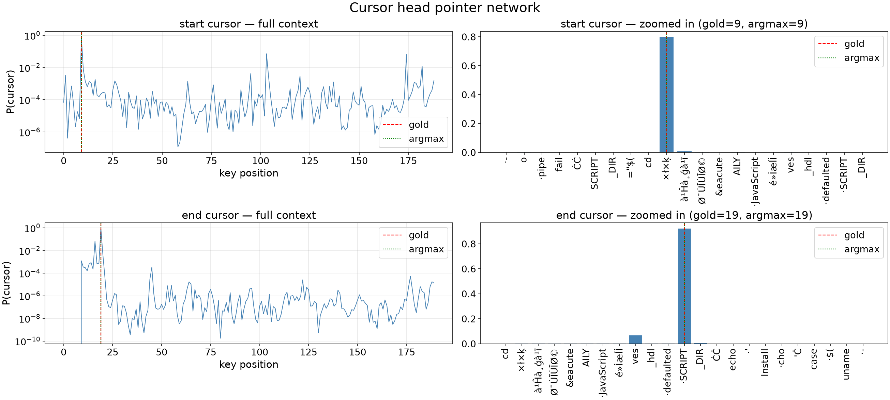
Start/end pointer distributions over the visible stream positions (log scale, left) and zoomed around the gold span (right). Both argmax positions land exactly on the gold cursor: start=9 (P=0.797) and end=19 (P=0.923).
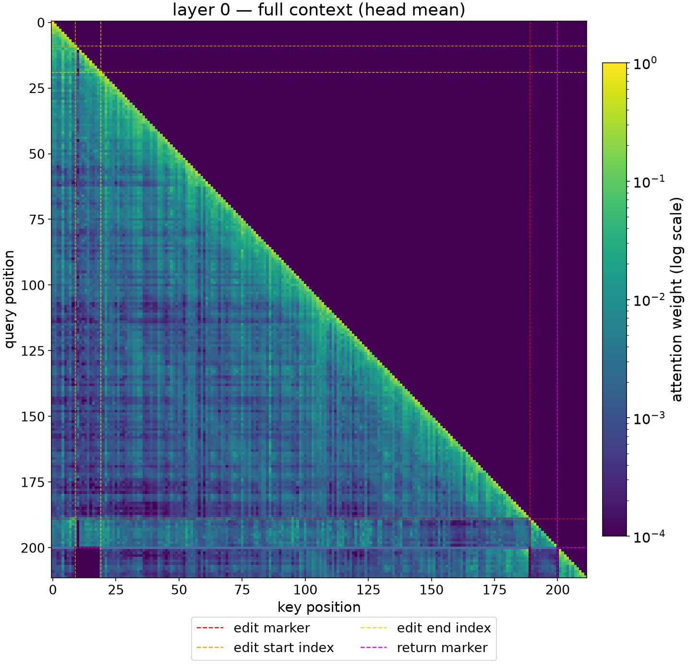
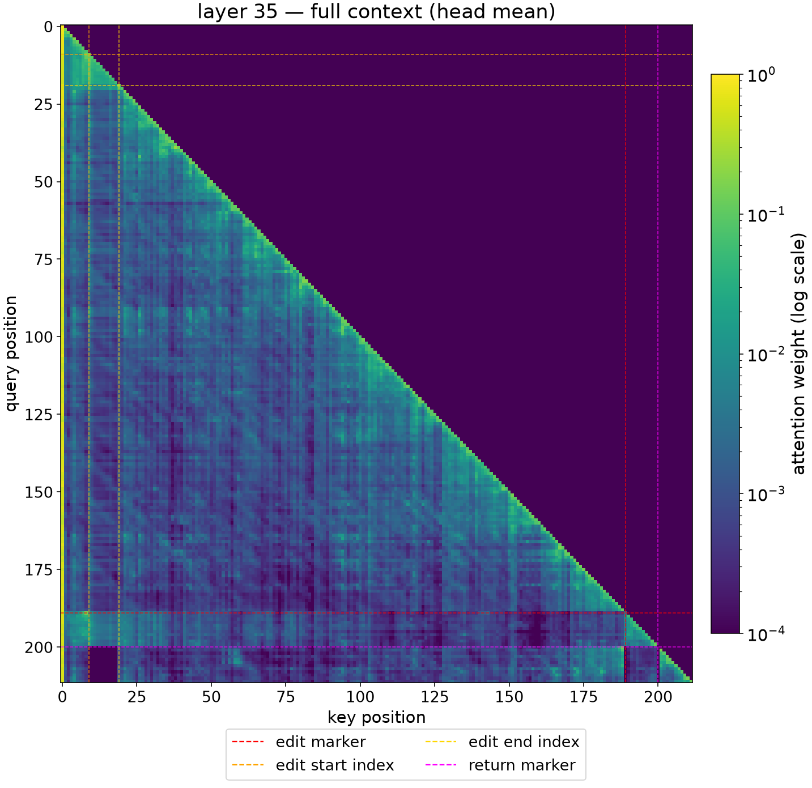
Head-mean query-key attention over the full 212-token stream (log scale); dashed lines mark the gold span (9–19), [EDIT] (189) and [RETURN] (200). While the edit is open (queries 189–200) the span stays visible, but after [RETURN] the mask removes the deleted keys 9–19 and the two markers at every layer.
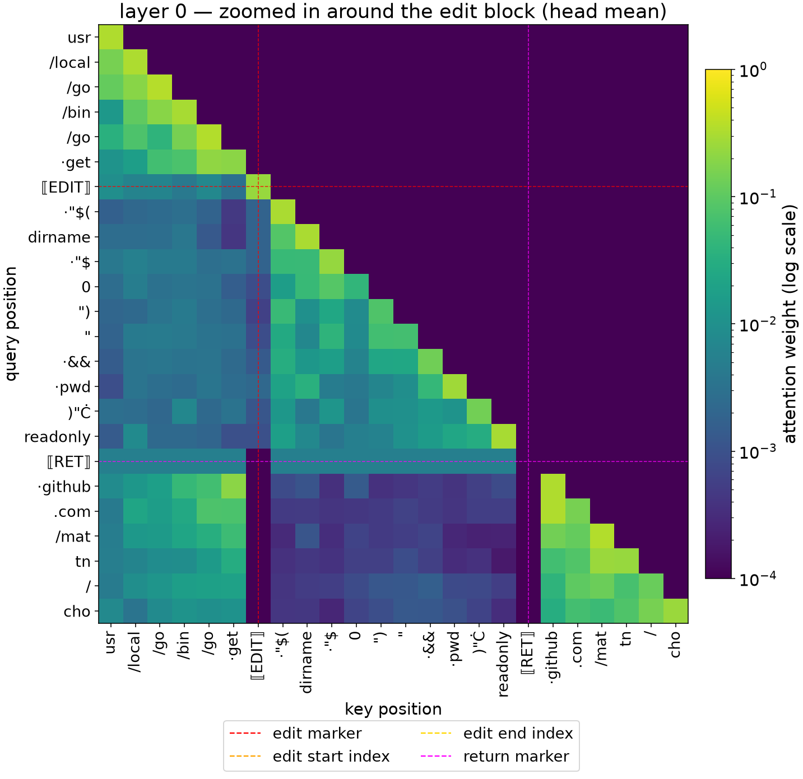
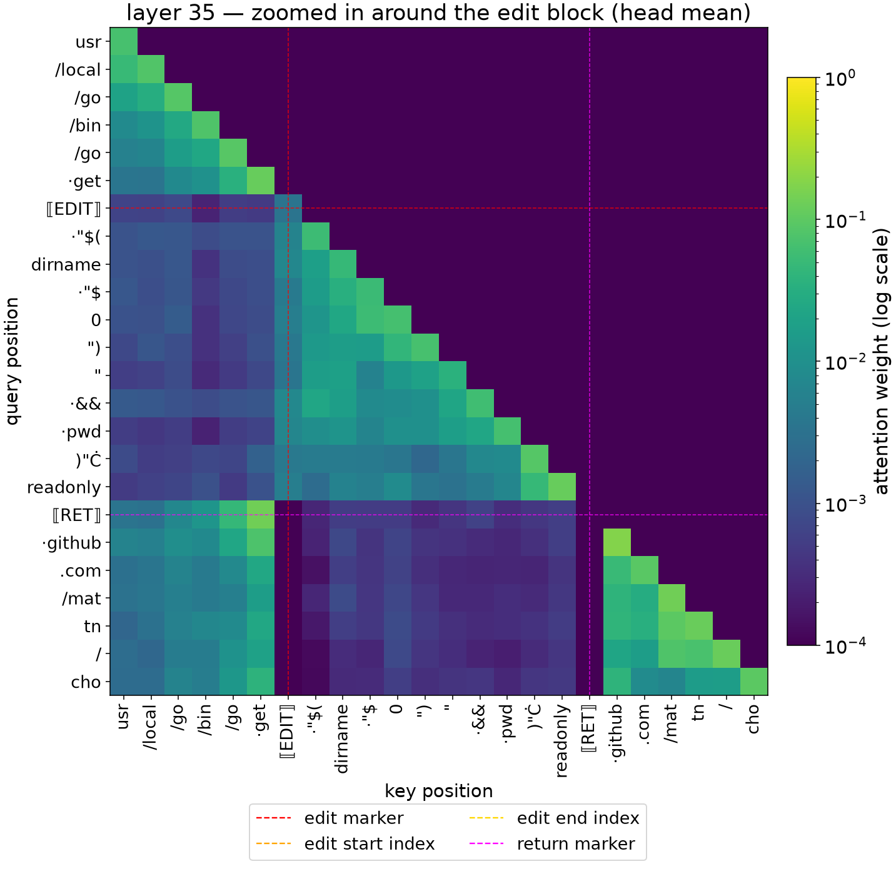
Same layers, zoomed to [EDIT]…[RETURN] and the replacement tokens between them (log scale); the deleted span (keys 9–19) is outside this window. Inside the block, tokens attend mostly to themselves and their recent neighbours. After [RETURN], the [EDIT]/[RETURN] key columns are masked (dark), and the continuation (github.com/mat…) attends to the pre-edit context and itself, with only weak weight on the replacement tokens — sharper at layer 35 than at layer 0.
AutoIndexer shows a model doesn't need to decide every displayed token in the order it computes them. It can draft, revisit, and keep only the resolved sequence — without losing autoregressive capabilities.
The harder problem isn't how to edit but when: knowing to stop drafting and revise. Edit timing, not representation, is the key target for future work.
shu.ishida@autodesk.com · Autodesk Research